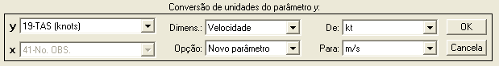
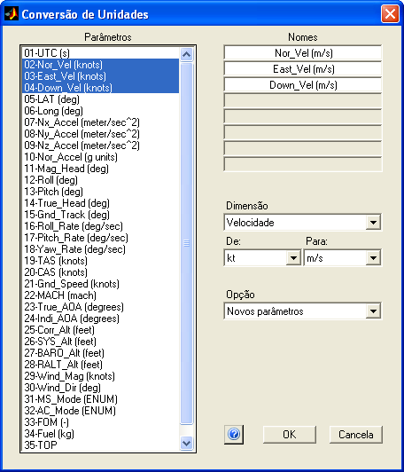

|
Menu
Funções |
|
Conversão
de Unidades
O R_DAT possui
duas funções para conversão de unidades nos
parâmetros. É possível converter um único parâmetro por vez ou um grupo
de
parâmetros simultaneamente.
As unidades são
agrupadas por dimensão. Para cada dimensão,
é possível converter entre quaisquer das unidades abaixo:
|
Dimensão |
Unidades |
Coeficientes de
conversão para a unidade-padrão |
|
|
Fator |
Termo
independente |
||
|
Distância |
m in ft mi yd NM cm km |
1 0,0254 0,3048 1609,344 0,9144 1852 0,01 1000 |
0 0 0 0 0 0 0 0 |
|
Velocidade |
m/s ft/s ft/min mi/h kt km/h |
1 0,3048 0,3048
/ 60 1609,344
/ 3600 1852
/ 3600 1
/ 3,6 |
0 0 0 0 0 0 |
|
Aceleração |
m/s² ft/s² kt/s g |
1 0,3048 1852
/ 3600 9,80665 |
0 0 0 0 |
|
Peso |
kgf lb N kN |
1 1
/ 2,204623 1
/ 9,80665 1000
/ 9,80665 |
0 0 0 0 |
|
Massa |
kg lbf slug |
1 1
/ 2,204623 9,80665
/ 0,3048 / 2,204623 |
0 0 0 |
|
Ângulo |
° rad mr SemiCircl |
1 180
/ pi 0,001 × 180 / pi 180 |
0 0 0 0 |
|
Temperatura |
°C °F K |
1 5 / 9 1 |
0 -32 ×
5
/ 9 -273,15 |
|
Pressão |
Pa atm bar mb psi inHg mmHg |
1 101325 100000 100 9,80665 /
2,204623 / 0,0254² 3386,388158 133,3223684 |
0 0 0 0 0 0 0 |
|
Volume |
L ml m³ cm³ in³ USG |
1 0,001 1000 0,001 0,254³ 3,785411784 |
0 0 0 0 0 0 |
|
Tempo |
s min h d |
1 60 3600 86400 |
0 0 0 0 |
|
Variação
temporal |
/s /min /h /d |
1 1/60 1/3600 1/86400 |
0 0 0 0 |
|
Frequência |
Hz rad/s RPM |
1 1/(2 × pi) 1/60 |
0 0 0 |
|
Torque |
N.m kgf.m lb.ft lb.in |
1 9,80665 9,80665
/ 2,204623 × 0,3048 9,80665
/ 2,204623 × 0,0254 |
0 0 0 0 |
|
Potência |
W HP cal/s |
1 745,6998716 4,183076342 |
0 0 0 |
|
Densidade |
kg/m³ kg/L lb/in³ lb/ft³ lb/USG |
1 0,001 1
/ 2,204623 / 0,0254³ 1
/ 2,204623 / 0,3048³ 1000
/ 2,204623 / 3,785411784 |
0 0 0 0 0 |
Obs.: Alguns
termos são mantidos na forma racional para
fazer uso de toda a precisão da variável do MATLAB.
|
Descrição das
Unidades |
|
|
° |
Grau |
|
°C |
Grau
Celsius |
|
°F |
Grau
Fahrenheit |
|
atm |
Atmosfera |
|
bar |
Bar |
|
cal |
Caloria |
|
cm |
Centímetro |
|
d |
Dia |
|
ft |
Pé |
|
g |
Aceleração
da gravidade |
|
h |
Hora |
|
HP |
Cavalo
de força |
|
Hz |
Hertz |
|
in |
Polegada |
|
inHg |
Polegada
de mercúrio |
|
K |
Kelvin |
|
kg |
Quilograma |
|
kgf |
Quilograma-força |
|
km |
Quilômetro |
|
kN |
Quilonewton |
|
kt |
Nó |
|
L |
Litro |
|
lb |
Libra |
|
lbm |
Libra-massa |
|
m |
Metro |
|
mb |
Milibar |
|
mi |
Milha
terrestre |
|
min |
Minuto |
|
ml |
Mililitro |
|
mmHg |
Milímetro
de mercúrio |
|
mr |
Miliradianos
(mils) |
|
N |
Newton |
|
NM |
Milha
náutica |
|
Pa |
Pascal |
|
psi |
Libra
por polegada quadrada |
|
rad |
Radiano |
|
RPM |
Rotações
por minuto |
|
s |
Segundo |
|
SemiCircl |
Semi-Círculo |
|
slug |
Slug |
|
USG |
Galão
americano |
|
W |
Watt |
|
yd |
Jarda |
Conversão
de Um Parâmetro
Essa função
permite converter a unidade de um único
parâmetro por vez.
Clique no menu “Funções ►
Conversão de unidades ... ► Um parâmetro” ou no botão na
Barra de Ferramentas.
A Caixa de
Diálogo solicitará que o usuário indique os
parâmetros para a conversão:

● No campo “y”,
selecione o parâmetro que deseja
converter.
● No campo “Dimens.”,
indique a dimensão da grandeza que deseja converter. As listas de
unidades dos
campos “De” e “Para” serão atualizados conforme a seleção da dimensão.
● No campo
“De”, indique a unidade de entrada.
● No campo
“Para”, indique a unidade de saída.
● No campo
“Opção”, indique se deseja criar um novo
parâmetro ou substituir o atual com os dados modificados.
Ao clicar “OK”,
o usuário deverá fornecer o nome do novo
parâmetro ou confirmar a substituição do parâmetro original, dependendo
da
seleção do campo “Opção”.


No primeiro
caso, após definir o nome e pressionar “OK”, o
novo parâmetro com intervalo alterado será acrescentado à penúltima
posição das
matrizes de trabalho (antes de “No.OBS.”).
No segundo
caso, ao clicar “Sim” o parâmetro será
atualizado.
Conversão
de Um Grupo de Parâmetro
Essa função
permite converter a unidade de um grupo de
parâmetros simultaneamente.
Clique no menu “Funções ►
Conversão de unidades ... ► Grupo de parâmetros” ou no botão na
Barra de Ferramentas.
A janela de
Conversão de unidades será apresentada:

● No campo
“Parâmetros”, selecione o grupo de
parâmetros que deseja converter. É possível selecionar até oito
parâmetros
usando o mouse e as teclas “Shift”
e “Ctrl” do teclado.
● No campo
“Dimensão”, indique a dimensão da grandeza
que deseja converter. As listas de unidades dos campos “De” e “Para”
serão
atualizados conforme a seleção da dimensão.
● No campo
“De”, indique a unidade de entrada.
● No campo
“Para”, indique a unidade de saída.
● No campo
“Opção”, indique se deseja criar novos
parâmetros ou substituir os atuais com os dados modificados.
● No campo
“Nomes”, indique os nomes dos novos
parâmetros ou os novos nomes dos parâmetros a serem modificados. O
R_DAT
interpretará os nomes e tentará criar nomes adequados à nova unidade.
Ao clicar “OK”
e confirmar a operação, os novos parâmetros
serão acrescentados às matrizes de trabalho antes do parâmetro “No.OBS.”, ou serão atualizados os
parâmetros selecionados,
dependendo da opção selecionada.
Lógica da
Operação
Para realizar a
conversão, o R_DAT passará os dados para a
unidade-padrão (primeira unidade de cada dimensão, indicada pelos
coeficientes
[1, 0] na tabela de unidades) e depois para a unidade desejada, através
da
equação abaixo:
Y2
= ( k1×Y1 + b1
- b2 ) / k2
onde:
Y1:
dados de entrada;
Y2:
dados de saída;
k1
e k2: fatores de conversão para a
unidade-padrão;
b1
e b2: termos independentes de
conversão para a unidade-padrão.
|
|
Conversões
anemométricas |
Conversão
de
coordenadas |
|